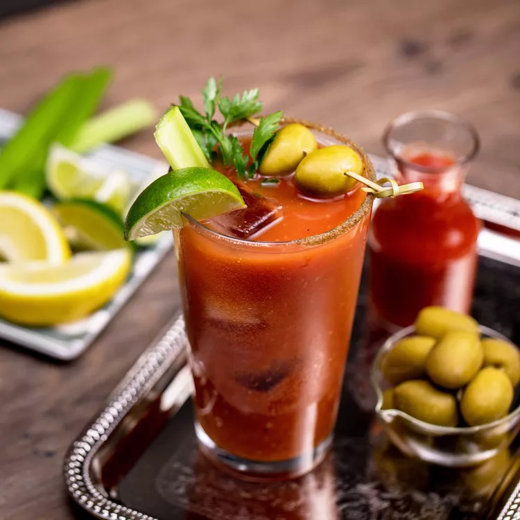

Bloody Mary

Description
The Bloody Mary is one of the world’s best-known cocktails, prized for its ability to jumpstart even the
groggiest of mornings. Its origins aren’t exactly clear, but one likely backstory points to the mid-1930s and
Fernand “Pete” Petiot, a bartender at King Cole Bar at the St. Regis hotel in New York City. Other sources
credit American actor George Jessel, who was said to have favored the combination of vodka and tomato juice as
customer of New York City’s 21 Club, though Petiot disputed Jessel's contributions to the creation of drink.
Ingredients
- Celery salt
- 1 lemon wedge
- 1 lime wedge
- 2 ounces vodka
- 4 ounces tomato juice
- 2 teaspoons prepared horseradish
- 2 dashes Tabasco sauce
- 2 dashes Worcestershire sauce
- 1 pinch ground black pepper
- 1 pinch smoked paprika
- Garnish: parsley sprig
- CGarnish: 2 green olives
- Garnish: lime wedge
- Garnish: celery stalk (optional)
Steps
- Pour some celery salt onto a small plate.
- Rub the juicy side of the lemon or lime wedge along the lip of a pint glass.
- Roll the outer edge of the glass in celery salt until fully coated, then fill the glass with ice and set
aside.
- Squeeze the lemon and lime wedges into a shaker and drop them in.
- Add the vodka, tomato juice, horseradish, Tabasco, Worcestershire sauce, black pepper, smoked paprika, plus
a pinch of celery salt along with ice and shake gently.
- Strain into the prepared glass.
- Garnish with parsley sprig, 2 speared green olives, a lime wedge and a celery stalk (optional).